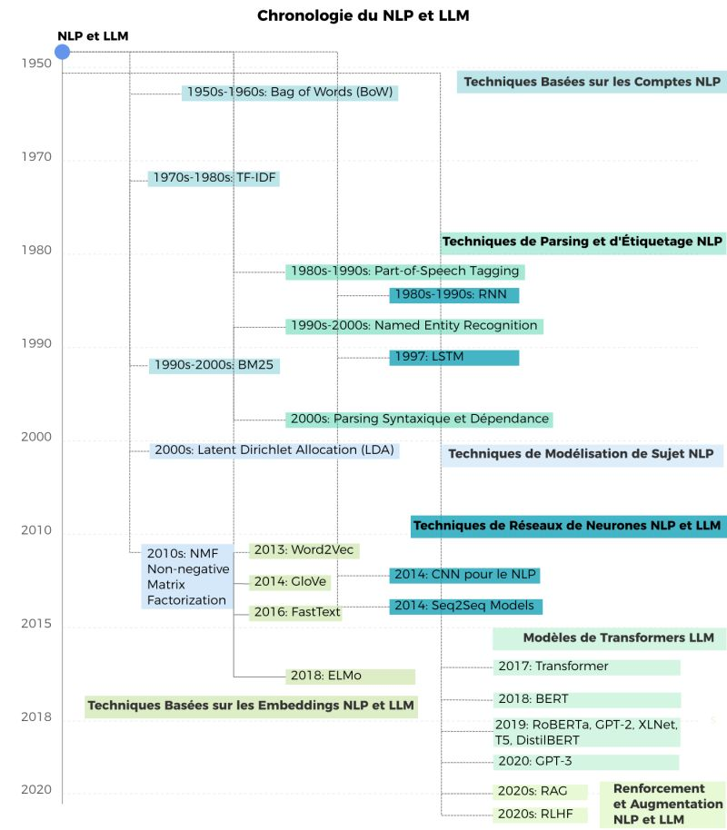
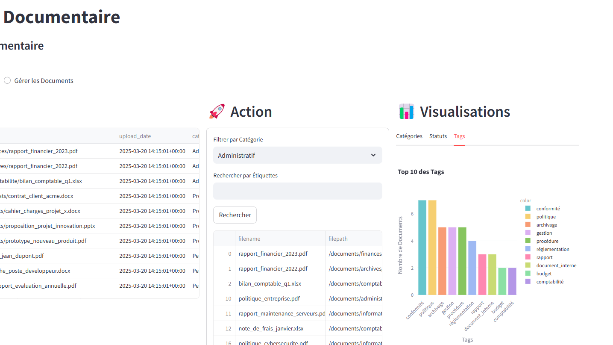
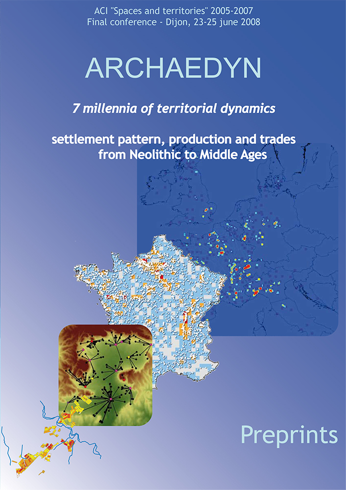

Newsletter Portfolio
07/04/2025
Découvrez mes derniers projets et réalisations dans cette newsletter hebdomadaire.
Récits visuels, horizons numériques :
Chaque newsletter, un voyage entre données, créativité et découvertes

evolution-nlp-llm-article

système-suivi-classement-documentaire

math-humanities-article
optimisation-générateur-Newsletter

Architecture Modulaire à Base de Contenu

blog-scientifique
evolution-nlp-llm-article
Visualisation de l'évolution des techniques NLP et LLM
Introduction
Nous avons travaillé sur la visualisation de l'évolution des techniques de Traitement du Langage Naturel (NLP) et des Grands Modèles de Langage (LLM) à travers le temps. À partir d'un fichier DOT initial décrivant la relation entre différentes technologies, nous avons créé plusieurs visualisations pour représenter cette évolution de manière claire et informative.
Étapes du processus
-
Conversion initiale du fichier DOT en diagramme Mermaid
Nous avons d'abord transformé la structure DOT en un diagramme Mermaid qui préservait l'organisation horizontale des éléments. -
Création d'une version SVG horizontale
Ensuite, nous avons développé une version SVG du diagramme qui offrait plus de contrôle sur le style et la présentation des éléments. -
Adaptation à un format vertical
À la demande d'une orientation verticale, nous avons réorganisé le diagramme SVG pour qu'il se développe de haut en bas. -
Création d'un dendrogramme chronologique
Finalement, nous avons conçu un dendrogramme qui intègre une chronologie, permettant de visualiser l'évolution temporelle des différentes techniques.
Visualisation finale
Notre visualisation finale prend la forme d'un dendrogramme chronologique qui:
- Représente le temps sur un axe vertical, de 1950 à 2020
- Organise les techniques par catégories fonctionnelles
- Différencie par couleur les technologies spécifiques au NLP, aux LLM, ou communes aux deux
- Montre clairement la progression et l'évolution des techniques au fil du temps
Cette chronologie met en évidence plusieurs tendances importantes:
- Les premières techniques (années 1950-1990) étaient principalement axées sur le NLP fondamental
- Les années 2000 ont vu l'émergence de techniques plus sophistiquées de modélisation et d'analyse
- L'arrivée des Transformers en 2017 marque un tournant majeur vers les LLM
- La période récente (2019-2020) est dominée par les modèles dérivés des Transformers
- Les dernières avancées incluent des techniques d'augmentation comme RAG et RLHF

Conclusion
Cette visualisation permet de mieux comprendre l'évolution des technologies du langage et offre une perspective claire sur la progression des techniques NLP vers les modèles LLM modernes. Elle illustre comment les avancées successives ont construit les fondations sur lesquelles reposent les capacités impressionnantes des systèmes d'IA linguistique actuels.
Le passage des techniques basées sur les comptages statistiques simples (BoW, TF-IDF) vers des représentations vectorielles (Word2Vec, GloVe), puis vers des architectures neuronales complexes (RNN, LSTM) et finalement aux Transformers, montre une progression fascinante qui a révolutionné notre capacité à traiter et générer du langage naturel.
Retour en hautsystème-suivi-classement-documentaire
Système de Suivi et Classement Documentaire
Contexte du Projet
Ce projet présente une solution innovante de gestion documentaire développée en Python, démontrant une approche moderne et flexible de l'organisation et du suivi de documents.
Fonctionnalités Clés
1. Génération Automatique de Métadonnées
Le cœur de l'application réside dans sa capacité à générer automatiquement des tags intelligents :
- Analyse contextuelle des documents
- Catégorisation dynamique
- Extraction de mots-clés pertinents
```python def generate_tags(category, description): # Génération intelligente de tags basés sur la catégorie et le contenu tags = set(random.sample(CATEGORY_TAGS.get(category, []), 3))
# Enrichissement contextuel
for keyword, related_tags in description_keywords.items():
if keyword in description.lower():
tags.update(random.sample(related_tags, min(2, len(related_tags))))
return ','.join(list(tags)[:5])
```
2. Visualisation Avancée
Utilisation de Plotly pour des visualisations interactives : - Graphique en donut des catégories de documents - Analyse des statuts documentaires - Exploration des tags les plus fréquents
3. Architecture Flexible
- Approche modulaire
- Chargement dynamique des documents
- Possibilité d'évolution vers des solutions de base de données plus complexes
Technologies Utilisées
- Python
- Streamlit : Interface utilisateur web
- Pandas : Manipulation de données
- Plotly : Visualisations interactives
Principes Techniques
- Génération contextuelle de métadonnées
- Catégorisation dynamique
- Visualisation interactive
- Flexibilité d'adaptation
Exemple de Génération de Tags
Un document "Rapport financier 2023" pourrait générer des tags comme : - administration - finances - comptabilité - budget - 2023
Perspectives d'Évolution
- Intégration de bases de données avancées
- Authentification utilisateur
- Moteur de recherche plus sophistiqué
- Analyse prédictive des documents
Conclusion
Ce projet illustre une approche moderne de gestion documentaire, combinant intelligence artificielle légère, visualisation de données et flexibilité architecturale.
Lien du Projet
``` Retour en hautmath-humanities-article
Créer des ponts entre mathématiques et sciences humaines : un dialogue dynamique
Introduction
La relation entre mathématiques et sciences humaines a longtemps été perçue comme antagoniste, les deux domaines étant souvent présentés comme des pôles opposés de la recherche intellectuelle. Pourtant, cette dichotomie est de plus en plus remise en question par des approches innovantes qui révèlent comment ces champs apparemment disparates peuvent s'enrichir mutuellement.
La cartographie de la connaissance
À l'intersection de ces domaines émerge ce que l'on pourrait appeler une "Cartographie Dynamique Systémique" (CDS) - une approche qui transforme les représentations statiques en récits vivants. Cette méthode considère les territoires non pas simplement comme des espaces à observer, mais comme des sujets à comprendre :
- Les territoires deviennent des organismes
- Les données dialoguent entre elles
- Les interactions forment le cœur de la compréhension
Data storytelling : au-delà des chiffres
Un exemple puissant de cette intégration est le data storytelling, qui transforme des statistiques brutes en récits significatifs. Prenons l'exemple d'un jeu de données sur l'archéologie de Paris :
Distribution des découvertes archéologiques par période historique : - Antiquité : 778 découvertes - Moyen Âge : 639 découvertes - Temps modernes : 430 découvertes
Au-delà de ces chiffres bruts se trouvent des insights plus profonds : 1. Paris n'a pratiquement aucune trace préhistorique, suggérant soit un développement tardif, soit un effacement par l'urbanisation 2. La concentration massive de découvertes antiques et médiévales révèle des couches urbaines successives, chaque période construisant littéralement sur les traces des précédentes
Modélisation mathématique en sciences humaines
Le véritable pont entre mathématiques et sciences humaines émerge dans la projection probabiliste - une méthode combinant l'analyse de données historiques avec la modélisation statistique pour suggérer de potentielles découvertes futures.
Cette approche illustre comment les fonctions mathématiques servent les sciences humaines : - Conversion des réalités qualitatives en données - Création de systèmes de représentation - Révélation de patterns cachés - Projection de possibilités futures
La formule mathématique n'est pas une fin en soi mais un moyen - un langage qui éclaire plutôt que de remplacer l'interprétation humaine.
Un territoire mathématique
Dans ce nouveau paradigme, une carte devient plus qu'une image statique. Grâce à la modélisation mathématique, nous pouvons transformer la cartographie :
| Carte traditionnelle | Cartographie mathématique | |-----------------|--------------------------| | Image statique | Système dynamique | | Représentation passive | Récit interactif | | Informations limitées | Narration multidimensionnelle |
Le territoire n'est plus un objet à observer mais un sujet capable d'évolution. Les interstices mathématiques deviennent des espaces où : - Les données interagissent - Les potentiels émergent - Les transformations s'inventent
Conclusion : un nouveau dialogue
Les mathématiques et les sciences humaines sont loin d'être antagonistes. Elles forment plutôt un duo complémentaire puissant :
Les mathématiques apportent : - Un langage précis - Des outils d'analyse rigoureux - La capacité à modéliser des phénomènes complexes
Les sciences humaines contribuent : - Le contexte - La profondeur interprétative - La compréhension des nuances humaines
La clé réside dans l'interdisciplinarité. Comme le suggérerait Edgar Morin, nous avons besoin d'une "pensée complexe" - dépassant les frontières disciplinaires vers une compréhension holistique. Les mathématiques n'écrivent pas l'histoire, elles l'éclairent, tandis que les sciences humaines apportent le sens et le contexte qui donnent leur signification aux chiffres.
Dans ce dialogue permanent, nous découvrons non pas une opposition mais une opportunité - un nouveau langage pour comprendre notre monde dans toute sa précision quantitative et sa profondeur qualitative.
Retour en hautoptimisation-générateur-Newsletter
Optimisation du Générateur de Newsletter Multiplateforme
Contexte
Dans le cadre du projet de portfolio numérique, nous avons développé un système automatisé de génération de newsletter qui s'adapte à différentes plateformes, notamment LinkedIn.
Objectifs Principaux
- Automatiser la création de contenus
- Générer des publications adaptées à différents canaux
- Préserver la richesse et la structure des projets
Améliorations Clés
1. Conversion HTML vers Markdown LinkedIn
- Extraction intelligente des projets à partir du HTML
- Conservation de la structure des sections
- Gestion dynamique des emojis
- Préservation des liens hypertextes
2. Mise en Page Dynamique
- Utilisation d'emojis thématiques
- Structuration flexible des contenus
- Gestion des différents types de contenus (paragraphes, listes)
3. Personnalisation des Publications
- Génération de titres accrocheurs
- Extraction automatique de résumés
- Création de hashtags pertinents
Fonctionnalités Techniques
Parsing HTML
- Utilisation de BeautifulSoup pour l'extraction de contenu
- Analyse structurée des éléments HTML
- Conversion intelligente en Markdown
Gestion des Projets
- Extraction des métadonnées
- Récupération dynamique des images
- Génération de résumés contextuels
Bénéfices
- Publication automatique et cohérente
- Gain de temps dans la création de contenu
- Adaptabilité à différentes plateformes
- Conservation de la richesse éditoriale
Perspectives d'Amélioration
- Intégration d'API de publication
- Personnalisation avancée des contenus
- Analyse des performances des publications
Conclusion
Un système de génération de newsletter qui allie technologie et créativité, transformant la diffusion de contenu numérique.
Projet développé par Alexia Fontaine - 2025
Retour en hautArchitecture Modulaire à Base de Contenu
Architecture Modulaire à Base de Contenu
L'Architecture Modulaire à Base de Contenu (ou "Content-Driven Modular Architecture") représente une approche moderne et flexible pour concevoir des sites web et des applications. Cette méthodologie place le contenu au centre du processus de développement, en le séparant strictement de la présentation.
Mots-clés: développement, architecture, contentdriven, méthodologie, applications
Principes fondamentaux
Cette architecture repose sur plusieurs principes clés qui la rendent particulièrement efficace pour les sites riches en contenu comme les portfolios et les blogs :
Mots-clés: architecture, portfolios, principes, plusieurs
Le contenu est stocké dans des fichiers indépendants (souvent au format Markdown) avec des métadonnées standardisées (frontmatter), complètement séparés du code HTML, CSS et JavaScript qui définit leur présentation. Cette séparation permet à chaque aspect d'évoluer indépendamment.
Mots-clés: standardisées, indépendance, présentation
Les sections et composants peuvent être facilement réutilisés, réorganisés ou recombinés pour créer de nouvelles pages ou expériences. Cette flexibilité permet d'assembler rapidement différentes vues à partir des mêmes éléments de base.
Mots-clés: expériences, réorganisation, flexibilité
Modifier un contenu n'exige pas de toucher au code HTML principal. Les rédacteurs de contenu peuvent se concentrer uniquement sur les fichiers Markdown pertinents, sans risquer d'altérer la structure ou le fonctionnement du site.
Mots-clés: fonctionnement, pertinents, concentrer, uniquement, rédacteurs
Ajouter une nouvelle section est aussi simple que de créer un nouveau fichier Markdown. Cette approche réduit considérablement la friction pour enrichir le site avec de nouveaux contenus.
Mots-clés: contenus
Implémentation pratique
Pour les composants simples, le Markdown pur suffit généralement. Cependant, pour les composants plus complexes comme les grilles de compétences, les cartes de services, ou les processus multi-étapes, l'HTML embarqué dans Markdown offre le meilleur compromis :
Cette approche hybride permet de préserver le rendu visuel des composants complexes tout en profitant pleinement de la modularité du système.
Mots-clés: multiétapes, compétences, composants, markdown, modularité, composants, complexes
Avantages à long terme
Au-delà des bénéfices immédiats, cette architecture offre des avantages substantiels sur le long terme :
- Transitions technologiques facilitées - Le contenu peut être conservé même si le framework ou la technologie de présentation change
- Versionning efficace - Les modifications de contenu sont clairement visibles dans les commits Git
- Possibilités de migration accrues - Le contenu peut être facilement exporté vers d'autres systèmes
- Optimisation du workflow - Les designers et développeurs peuvent travailler sur l'interface pendant que les rédacteurs créent le contenu
Cette architecture représente une évolution naturelle des systèmes de gestion de contenu traditionnels, offrant davantage de flexibilité tout en conservant une structure claire et organisée.
Mots-clés: architecture, flexibilité
1. Séparation du contenu et de la présentation
Le contenu est stocké dans des fichiers indépendants (souvent au format Markdown) avec des métadonnées standardisées (frontmatter), complètement séparés du code HTML, CSS et JavaScript qui définit leur présentation. Cette séparation permet à chaque aspect d'évoluer indépendamment.
Mots-clés: indépendance, standardisés, présentation
2. Composabilité
Les sections et composants peuvent être facilement réutilisés, réorganisés ou recombinés pour créer de nouvelles pages ou expériences. Cette flexibilité permet d'assembler rapidement différentes vues à partir des mêmes éléments de base.
Mots-clés: flexibilité
3. Maintenabilité
Modifier un contenu n'exige pas de toucher au code HTML principal. Les rédacteurs de contenu peuvent se concentrer uniquement sur les fichiers Markdown pertinents, sans risquer d'altérer la structure ou le fonctionnement du site.
Mots-clés: pertinents, rédacteurs
4. Évolutivité
Ajouter une nouvelle section est aussi simple que de créer un nouveau fichier Markdown. Cette approche réduit considérablement la friction pour enrichir le site avec de nouveaux contenus.
Mots-clés: enrichir, contenus
Retour en hautblog-scientifique
Blog Scientifique : ARCHAEDYN
Image Représentative

Contexte du Projet
Un projet de recherche archéologique innovant explorant les dynamiques territoriales sur 7 millénaires.
Objectifs de Recherche
- Analyser l'occupation humaine
- Étudier les transformations territoriales
- Comprendre l'évolution historique des espaces
Méthodologie de Recherche
Approche Interdisciplinaire
- Archéologie
- Cartographie historique
- Analyse spatiale
- Systèmes d'Information Géographique (SIG)
Techniques d'Analyse
- Analyse cartographique détaillée
- Reconstruction des territoires historiques
- Étude des mutations spatiales
-
Cartographie comparative
-
Études archéologiques comparatives
- Analyse des vestiges
- Comparaison inter-sites
-
Reconstruction des dynamiques d'occupation
-
Modélisation des Données Spatiales
- Utilisation d'outils SIG avancés
- Création de modèles spatiaux
- Analyse des transformations territoriales
Compétences Mises en Œuvre
- Recherche archéologique
- Analyse géospatiale
- Traitement de données historiques
- Modélisation cartographique
- Systèmes d'Information Géographique
Périodes Étudiées
- Néolithique
- Périodes intermédiaires
- Moyen Âge
Impact Scientifique
- Compréhension approfondie des dynamiques territoriales
- Nouvelle perspective sur l'occupation humaine
- Méthodologie innovante d'analyse historique
Lien vers la Publication
Philosophie de Recherche
"Chaque trace, chaque vestige est un fragment d'un récit territorial plus large."
Conclusion
Un projet qui transcende la simple étude archéologique pour proposer une vision dynamique et vivante de l'histoire territoriale.
Retour en haut